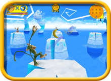

When playing using the Wii Balance Board, follow the procedure shown below.
If the Wii Balance Board Has Been Synchronized in Standard Mode

You can use the Wii Balance Board in addition to a Wii Remote to control your monkey in all the single player modes.
To activate the Wii Balance Board, use the Wii Balance Board icon located at the top of all the single player menu screens and follow the on screen instructions.

Note: If you notice abnormal behavior in gameplay, contact Nintendo Customer Service at 1-800-255-3700 or visit support.nintendo.com.
Before the round starts, you will be asked to calibrate the Wii Balance Board, again follow the on screen instructions. After calibration, do not jump or step off the Wii Balance Board until the end of the round. If you do, the calibration will have to be performed again.
During the game, as you lean on the Wii Balance Board, your monkey will dodge in the same direction you lean.
If the Wii Balance Board Has Not Been Synchronized in Standard Mode
- When the screen on the right is displayed, remove the Battery Cover on the bottom of the Wii Balance Board and press and hold
 .
.
 The Power LED on the balance board will start blinking.
The Power LED on the balance board will start blinking.
- When removing the Battery Cover, be careful not to drop the Wii Balance Board on your feet or pinch your fingers.
- Make sure the batteries have been inserted correctly in the Wii Balance Board.
- When the Power LED starts to blink, remove your finger from .

- Open the SD Card slot cover on the front of the Wii console, and press
 on the console while the Power LED on the Wii Balance Board is blinking. The power LED will stop blinking and light steadily once Standard Mode synchronization is complete.
on the console while the Power LED on the Wii Balance Board is blinking. The power LED will stop blinking and light steadily once Standard Mode synchronization is complete.
- Once the synchronization procedure is complete, replace the Battery Cover on the Wii Balance Board and close the SD Card slot cover.
 |
 |
 |
 |
- Only one Wii Balance Board can be synchronized to a Wii console at a time. Up to 10 Wii Remote controllers and accessories can be synchronized to a console at any time with the Standard Mode procedure. If additional synchronizations are made, the oldest Wii Remote data will be overwritten, but the Wii Balance Board data will be retained.
- The Wii Balance Board can only be synchronized to one console at a time using the Standard Mode procedure. You will have to repeat the synchronization procedure each time you change the console that is synchronized with the balance board.
- The Wii Balance Board uses the Player 4 (4P) connection. If a Wii Remote is actively using 4P, that remote will be disconnected while the balance board is being used.
|
 |
 |
 |
 |